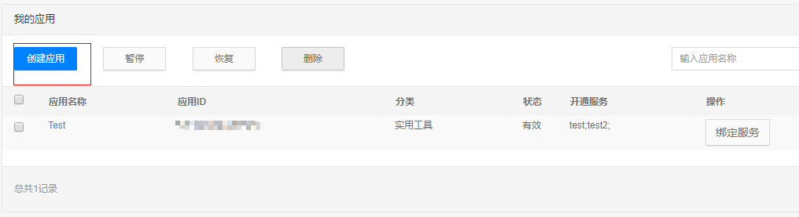
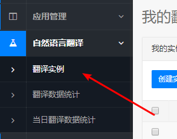
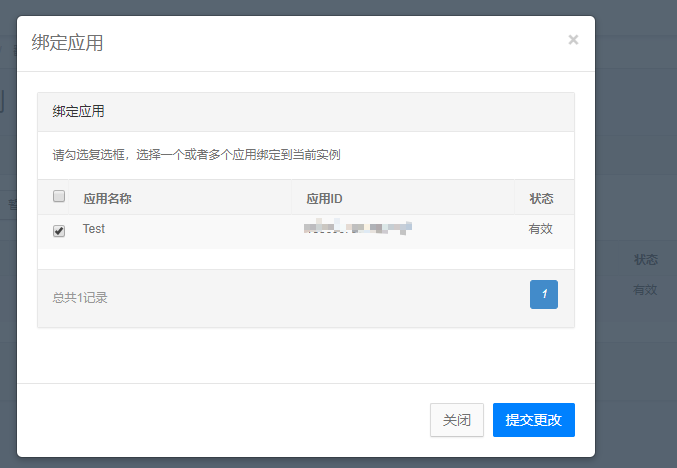
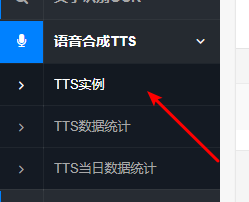
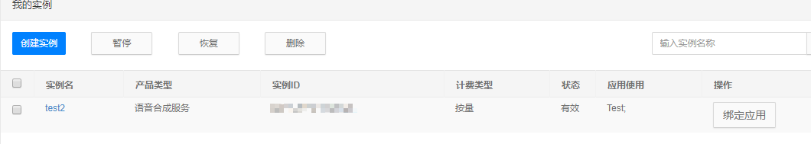
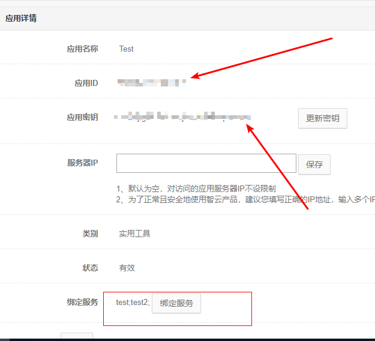
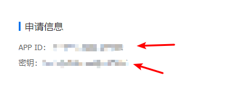

1有道智云api申请地址：http://ai.youdao.com/
（1）先进行注册，注册后进入后台，点左侧的应用管理>我的应用，然后点击创建应用。

（2）然后点自然语言翻译>翻译实例。然后创建实例，接着点击绑定应用，与刚创建的应用绑定。


（3）接着点语音合成TTS>TTS实例，然后创建实例，同样和刚才创建的应用绑定。


（4）最后进应用管理>我的应用>应用详情。便可以看到应用id和应用密钥。然后将应用id和应用密钥填到手机软件的设置界面就可以使用了。

2、百度翻译api接口申请地址：http://api.fanyi.baidu.com/api/trans/product/index
注册后到管理控制台便可以看到你得到APPID密钥。每个月有两百万的免费字符供你使用。

接着到软件的设置将appid和密钥填入并保存就可以正常使用了。